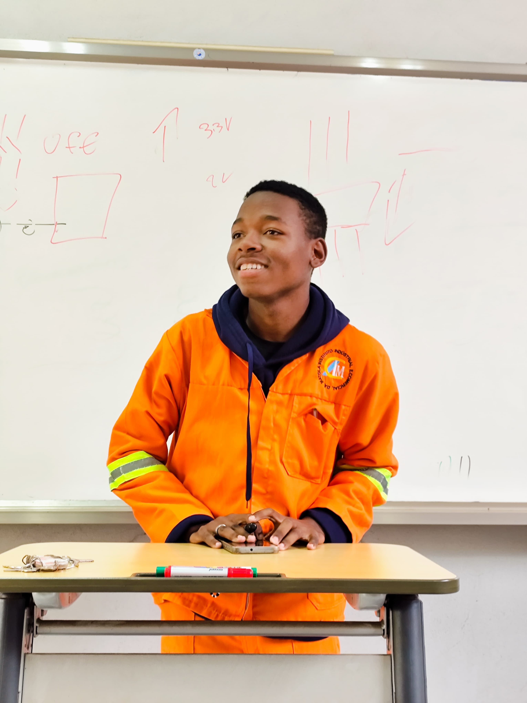

Liedson Nhapulo | WDD 130

My name is Liedson Armenio Nhapulo, I am 19 years old, and I live in Maputo, Mozambique. I am currently a student at BYU, beginning my journey in Software Development. I am just starting to learn programming, and I am excited to explore coding, software design, and technology in general. I enjoy discovering new tools, solving problems, and gradually building my skills. I am motivated, curious, and eager to grow professionally. My goal is to develop innovative software solutions in the future and make a positive impact in the world of technology.